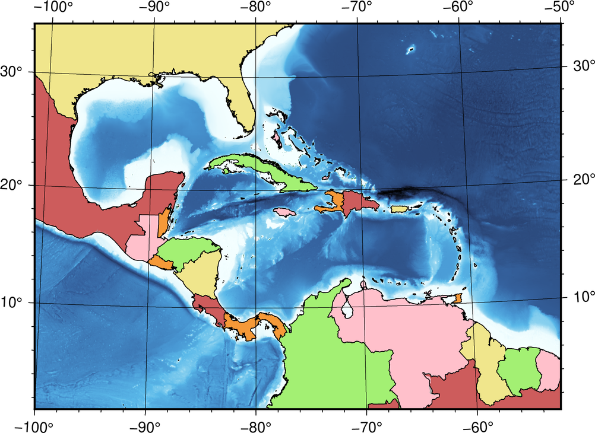

Pen and Painting
Contents
3. Pen and Painting#
Attention
This instruction is for the Modern Mode in GMT 6. For making the same map using the GMT 6 Classic Mode or GMT 4-5, Please go to this page (only final script and partial instruction).
In order to show the data on a map effectively, we should select all the colors and line styles with discretion. Picking the right color and line combination for a map is truly an art - a map maker usually spends much time tweaking their map, and hopes that their map will look pleasing and comfortable. Here we are going to introduce how to manipulate the related settings in GMT, which will make you find your best combination for your map must faster. We will also show how to make a simple colorbar legend on the map in this chapter.
3.1. Goal#
Make a map of Central America. Ocean area is colored based on topography, and the Land area is colored based on countries, as the following map shows. The water area encircled by central America and many islands is Caribbean Sea, and the bay area at the upper left corner is called the Gulf of Mexico. On this map, you can quickly locate more than a dozen big countries (in terms of area) and realize that both the Caribbean Sea and the Gulf of Mexico are much shallower than the Atlantic Ocean in the northeast. According to the bathymetry depth colorbar legend, we can also find that the deepest place is in the north of Puerto Rico, at more than 8000 m deep.

Go to the final Script
3.2. Commands and Techniques#
coast- fill countries with colorsgrdimage- plot colored imagecolorbar- plot color bargrdinfo- display basic information from a grid fileExternal command
grep- find strings in GMT output text (findstrin Windows) (optional)How to specify colors on a map
Setting up pen attributes
Overlay multiple map layers
Use variables in a script to make your script look pretty
Use anchor points to specify location to plot the colorbar
3.3. Tasks before plotting#
In this chapter, we will again use the @earth_relief_01m dataset from the GMT server. For more details, please see Color the Topography. The extent of the desired map is -R-100/1/-50/34r, as the following Google Maps screenshot shows. Please see Make Your First Map for more details about -R.
3.4. Procedure#
Firstly let’s take a look at our desired map. There are many different elements overlaid with a fixed order in the map. We can generally classify them into four groups, which are (from the bottom to the top)
Topography map
Country blocks
Coastline, borders, and grid lines
The block for the colorbar legend
Therefore, the commands in our GMT script should follow this order; i.e. your code will look like this:
Section 1: bathymetry (grdimage)
Section 2: filling of the countries (coast)
Section 3: all lines (coast)
Section 4: color bar (colorbar)
You will need to assign a color or a series of colors (color ramp) for both bathymetry and countries. First off, let’s see how to specify a single color. The simplest way, which has been used in the previous chapter, is providing the name of the desired color. GMT supports more than a hundred names of colors, and you can check them out at here and use them directly. For example, the following command
gmt coast -Ggreen # ... the later part is skipped
will fill the land with green. Since we are going to fill the country blocks, we have to use another coast option -E. The -E option reads a database called DCW and fills the blocks using the political boundaries data found from the database. Its syntax is
-E(code1),(code2),...+g(fill)+p(pen)
Here code represents the 2-letter code of country name from ISO 3166-1 alpha-2. For example, TW is Taiwan, and US represents the United States. Besides from checking the code table from the Wikipedia, you can also enter the following command and search them in GMT:
$ gmt coast -E+l # show the 2-letter national code on the screen
# or
$ gmt coast -E+L # show the 2-letter national and province code on the screen (only for big countries)
There is a useful trick: if you want to search for a specific country (the name is know), you can use grep, a built-in command in sh to assist the search, like this:
$ gmt coast -E+l | grep -i japan
JP Japan
The -i option here is to treat upper-case letters the same as lower-case letters. You can see that Japan’s code JP appears in the last line.
Tip
If your system is Windows,
grepis not available, but you can use an alternative commandfindstrfor the same query. To use it:$ gmt coast -E+l | findstr /i japanIf you want to use
grepfor querying more than one country at once, use the following syntax:$ gmt coast -E+l | grep -i 'japan\|singapore\|zealand'
And the command will find the code for Japan, Singapore, and New Zealand, all at once.
And the next task is to fill colors. GMT supports six ways to represent colors:
"green" # 1. Color name
"255/99/71" # 2. R/G/B value (from 0 to 255). This is tomato color
"#87CEEE" # 3. HTML color representation (#RRGGBB，hexadecimal). This is sky blue
"25-0.86-0.82" # 4. H-S-V value (H from 0 to 255; S and V from 0 to 1). This is chocolate color
"8/8/0/2" # 5. C/M/Y/K value (in percentage). This is lavender
"169" # 6. Grayscale number. This one is equivalent to 169/169/169 in R/G/B
You can use whichever way you like to specify colors. Here we try to fill Mexico (code MX) with brick red using HTML code #CD5C5C as following:
$ gmt coast -R-100/1/-50/34r -JM15c -EMX+g#CD5C5C -png central_america # the map is 15 cm wide
In the output PNG, you can see that the land area of Mexico has turned into brick red.
Since we are going to use many different colors for different countries, we can specify those colors and the corresponding countries in variables and use them later when running coast. This not only makes your code look clean and pretty, but also more convenient for later editing. The ways to assign variables are slightly different from shell to shell, and here we will use bash as an example. You can use the following expression to assign and access your variable:
variable_name='variable_content' # assigning a variable
${variable_name} # accessing a variable ("variable_name" will be substituted by "variable_content")
Use the syntax to our example and the code will look like:
color1='#CD5C5C'
colorgroup1='MX,BR,PA,DO'
gmt coast -R-100/1/-50/34r -JM15c -E${colorgroup1}+g${color1} -png central_america
This code snippet can paint Mexico (MX), Brazil (BR), Panama (PA), and Dominican (DO) with brick red at once. If you want to change the color or the country list, you only need to change the content of colorgroup1 or color1 and leave the coast command the same.
Tip
A different command-line environment has a different way to set up variables, and this is not an easy topic regarding which one you are using. Here we will only focus on the GMT commands. For the details of using variables, please refer to some websites or books designed for your shell, e.g., cmd, bash or csh.
There are many online palettes, such as HTML color codes, which helps you pick the color you want. After you decide the color from the website, you can simply copy the color code and paste it to the variables in the script. Have fun hunting for colors!
Next, we are going to use the same way to fill all the neighboring countries with color. As the previous chapter shows, we firstly use grdimage to plot bathymetry, and then use coast to fill everything on the map:
# ==== Setting up colors and corresponding countries ====
# mexico, brazil, costa rica, dominican
color1='#CD5C5C'
colorgroup1='MX,BR,CR,DO'
# guatemala, venezuela, jamaica, french guiana, bahamas
color2='pink'
colorgroup2='GT,JM,VE,GF,BS'
# united states, puerto rico, nicaragua, guyana
color3='240/230/140'
colorgroup3='US,PR,NI,GY'
# belize, haiti, trinidad and tobago, panama, salvador
color4='0/36/74/4'
colorgroup4='BZ,HT,TT,PA,SV'
# colombia, cuba, honduras, suriname
color5='97-0.52-0.94'
colorgroup5='CO,CU,HN,SR'
# 其他國家
color0='169'
# ==== Main commands ====
gmt begin central_america png
gmt grdimage @earth_relief_01m -JB-80.27/8.58/-8/24/15c -R-100/1/-50/34r -Cgeo
gmt coast -G${color0} \
-E${colorgroup1}+g${color1} \
-E${colorgroup2}+g${color2} \
-E${colorgroup3}+g${color3} \
-E${colorgroup4}+g${color4} \
-E${colorgroup5}+g${color5}
gmt end
Note that in grdimage, we choose B for the -J option. This is a different map projection called Albers Projection. Albers projection is a conic projection that keeps everywhere on the map staying in their original size. Its syntax goes like this:
-JB[center_lon]/[center_lat]/[upper_bond_lat]/[lower_bond_lat]/[map_width]
As we mentioned in Color the Topography, the default -C setting (colormap) for topographic data is geo. To help readers understand the settings used in the map, we use -Cgeo explicitly. In fact, GMT still uses the same colormap without adding geo, or even without -C. In the Setting up colors and corresponding countries section, we specify 6 colors and 22 countries. The gray color0 is used for other countries in the map area. In the Main commands section, we firstly use -G to paint all land areas in gray, and then use -E for coloring each country. You may notice that all the -E options can be assigned in a single coast command, which saves your time from entering the coast command multiple times. Run the script, and you should get the output map like this:

The next thing is to draw coastlines and country borderlines so that these countries will jump out. In Make Your First Map, we mentioned that the “pen attributes” of a line consist of three parts: thickness,color,style. thickness can be predefined names, such as thinner, thickest, or fat. There are 12 names for thickness, and you can check them up here. If you would like to specify thickness manually, you can use units like c (cm), i (inch), p (pt). For example, 0.1c stands for 0.1 cm. The color of the pen uses the same color code system we said earlier in this chapter, so just use any expression you like. The style of the pen is a solid, continuous line, and you can freely combine - (dash) and . (dot) to generate the line style you want. For example, -.. means a line with two dots lying in between two dashes. Here are more examples:
thinner,green,- # green, thin solid line (0.5 pt)
3p,100/0/100,. # deep purple dotted line in 3 pt wide
1c,#555555,--.. # gray, "--.." styled line in 1 cm wide
coast has three options that plot lines. They are:
-I[number]/[pen] # Draw rivers
-N[number]/[pen] # Draw political borders
-W[number]/[pen] # Draw shorelines
We have already introduced -I and -N in Color the Topography. The number in -W can be 1, 2, 3, or 4, representing coastline, lake shoreline, shoreline of island-in-a-lake, and shoreline of lake-on-an-island-in-a-lake, respectively. Here we can use coast again to draw coastlines and country borders using thinner thickness, and also place -Bafg to draw the map frame and gridlines:
# (skipped)
# ==== Main commands ====
gmt begin central_america png
gmt grdimage @earth_relief_01m -JB-80.27/8.58/-8/24/15c -R-100/1/-50/34r -Cgeo
gmt coast -G${color0} \
-E${colorgroup1}+g${color1} \
-E${colorgroup2}+g${color2} \
-E${colorgroup3}+g${color3} \
-E${colorgroup4}+g${color4} \
-E${colorgroup5}+g${color5}
gmt coast -W1/thinner -N1/thinner -Di -Bafg
gmt end
The output map this time looks like this:
{kind=link}
Note
Did you notice that the style of the map frame changed after we used a different map projection? To further set up the map frames, please see Design Map Layout for detailed instruction.
To show the depth of the seafloor, finally we are going add a colorbar legend showing which color corresponds to which depth. In GMT 6, we can use colorbar to plot color bars and colorbar legends. (It was called psscale in the previous GMT version.) The basic syntax of colorbar is:
gmt colorbar -D[position_and_size] -B[gridline_ticks_labels_etc]
colorbar provides many ways to set up -D. Here we are going to use the simplest one:
-Dj[Anchor_point_position]+w[colorbar_length]
-Dj places the color bar in one of the reference points inside the map. GMT uses six letters to specify the reference point position: L (left), C (horizontal central), R (right), T (top), M (vertical middle), and B (bottom). We pick one letter from L, C, R and another letter from T, M, B and combine them together to get the reference point position:
LT CT RT
LM CM RM
LB CB RB
If we want to place a 3 cm-long color bar in the inner right side of the map, set the -Dj option like this:
-DjRM+w3c
The -B option in colorbar is basically the same from the -B option in coast. However, we have to adjust the settings of the x axis and y axis separately because a color bar only changes its color along one direction:
-Bx[gridline and ticks (afg settings)]+l[label at the tick side] -By+l[label at the end of the colorbar]
Here we try to use -Bx3000 (this number will be applied to all the afg settings) and -By+lm (place m at one side of the color bar). We don’t plan to place anything at the side of map ticks so that we can omit +l in -Bx. Place the colorbar command after coast to ensure it is plotted at the top of the map:
# (skipped)
# ==== Main commands ====
gmt begin central_america png
gmt grdimage @earth_relief_01m -JB-80.27/8.58/-8/24/15c -R-100/1/-50/34r -Cgeo
gmt coast -G${color0} \
-E${colorgroup1}+g${color1} \
-E${colorgroup2}+g${color2} \
-E${colorgroup3}+g${color3} \
-E${colorgroup4}+g${color4} \
-E${colorgroup5}+g${color5}
gmt coast -W1/thinner -N1/thinner -Di -Bafg
gmt colorbar -DjRM+w3c -Bx3000 -By+lm
gmt end
{kind=link}
So far, our map is nearly finished. The rest of the work is to make the colorbar legend more visible and more readable. Since it is not clear to see when the colorbar is plotted on the dark sea bed, we can fill the background of the colorbar with a transparent white color and add the contrast to black lines and words. colorbar uses the following option to fill background:
-F+g[color]
To specify transparency, what you need is simply to add @[transparency%]. @100 means completely transparent (which equals nothing), and @0 means completely non-transparent (which equals to the original fill color.) Here we use -F+gwhite@50 to achieve our goal. Besides, Our land topography is overlaid by the country color blocks so that the upper part of the colorbar (0 to 5000 m) is useless information. To skip drawing this part, we can use -G option for specifying the range of the color bar to be plotted, like this
-G[min_value]/[max_value]
max_value can be set to the sea level (0), but what about the minimum value? Don’t forget that we can use grdinfo to look at the information of the grid file, but we have to use the geographic area (-R) of interest this time:
$ gmt grdinfo @earth_relief_01m -R-100/1/-50/34r
# (skipped)
/home/whyj/.gmt/server/earth_relief_01m.grd: x_min: -100 x_max: -50 x_inc: 0.0166666666667 (1 min) name: longitude n_columns: 3001
/home/whyj/.gmt/server/earth_relief_01m.grd: y_min: 1 y_max: 34 y_inc: 0.0166666666667 (1 min) name: latitude n_rows: 1981
/home/whyj/.gmt/server/earth_relief_01m.grd: z_min: -8434 z_max: 5310 name: elevation (m)
# (skipped)
The value for z_min is the minimum value in the search region. Therefore, we will use -8434 as the min_value. The full option is -G-8434/0. Add -G and -F options into your colorbar command``, and voila! Your map is done.
Note
By default,
colorbardraws the colormap that is most recently used in the script, which isgeoin this example, If you want to usecolorbarfor plotting a different colorbar, you have to use-C[colormap_name]for specifying the colormap to plot.This chapter shows the most basic way to plot the color bar. For advances skills and tips, please see Edit CPT and Colorbar.
3.5. Script#
The final script for our map is:
# ==== Setting up colors and corresponding countries ====
# mexico, brazil, costa rica, dominican
color1='#CD5C5C'
colorgroup1='MX,BR,CR,DO'
# guatemala, venezuela, jamaica, french guiana, bahamas
color2='pink'
colorgroup2='GT,JM,VE,GF,BS'
# united states, puerto rico, nicaragua, guyana
color3='240/230/140'
colorgroup3='US,PR,NI,GY'
# belize, haiti, trinidad and tobago, panama, salvador
color4='0/36/74/4'
colorgroup4='BZ,HT,TT,PA,SV'
# colombia, cuba, honduras, suriname
color5='97-0.52-0.94'
colorgroup5='CO,CU,HN,SR'
# other countries
color0='169'
# ==== Main commands ====
gmt begin central_america_gmt6 png
gmt grdimage @earth_relief_01m -JB-80.27/8.58/-8/24/15c -R-100/1/-50/34r -Cgeo # basemap
gmt coast -G${color0} \
-E${colorgroup1}+g${color1} \
-E${colorgroup2}+g${color2} \
-E${colorgroup3}+g${color3} \
-E${colorgroup4}+g${color4} \
-E${colorgroup5}+g${color5} # fill countries with colors
gmt coast -W1/thinner -N1/thinner -Di -Bafg # boundaries and coastline
gmt colorbar -DjRM+w3c -G-8434/0 -Bx3000 -By+lm -F+gwhite@50 # colorbar legend
gmt end
Note
“Plot the country and bathymetry map – map extent is set to (100W – 50W，1N – 34N) in Albers projection and 15 cm wide. We use 6 different colors to fill country blocks and draw borders and coastlines with a thin black line. The bathymetry data come from the @earth_relief_01m dataset and are plotted with the geo color ramp. Finally, we place a 3-cm-tall color bar on the right side of the map with tick tables at every 3000 m. The background of the legend is filled with transparent white.”
Check the final map
3.6. PyGMT script#
You can make the same map using the following PyGMT script:
import pygmt
# ==== Setting up colors and corresponding countries ====
# Here we take the advantage of Python's dictionary data structure!
color_dict = {'MX,BR,CR,DO': '#CD5C5C', # mexico, brazil, costa rica, dominican
'GT,JM,VE,GF,BS': 'pink', # guatemala, venezuela, jamaica, french guiana, bahamas
'US,PR,NI,GY': '240/230/140', # united states, puerto rico, nicaragua, guyana
'BZ,HT,TT,PA,SV': '0/36/74/4', # belize, haiti, trinidad and tobago, panama, salvador
'CO,CU,HN,SR': '97-0.52-0.94'} # colombia, cuba, honduras, suriname
color0 = '169' # other countries
dcw_list = [key + '+g' + value for key, value in color_dict.items()]
# ==== Get the Earth relief data ====
region = [-100, -50, 1, 34]
grid = pygmt.datasets.load_earth_relief(resolution='05m', region=region)
# ==== Plotting ====
fig = pygmt.Figure()
fig.grdimage(grid, region=region, projection='B-80.27/8.58/-8/24/15c', cmap='geo')
fig.coast(land=color0, dcw=dcw_list)
fig.coast(shorelines='1/thinner', borders='1/thinner', resolution='i', frame='afg')
# Note that we added '+o1c/0' to the original position string to slightly shift the colorbar!
fig.colorbar(position='jRM+w3c+o1c/0', truncate=[-8000, 0], frame=['x3000', 'y+lm'], box='+gwhite@50')
fig.show()
fig.savefig('central_america_pygmt.png')
You can use the following Binder link to try this code:
3.7. Exercise#
Using a similar fashion from the map in this chapter, make a map of South China Sea showing topography and the nearby countries. Use the coordinate
95E to 123Eand0N to 26N. You can choose colors from this chapter or design your favorite color combination.Is there any way to fill Hong Kong and Hainan Island with a different color from China?